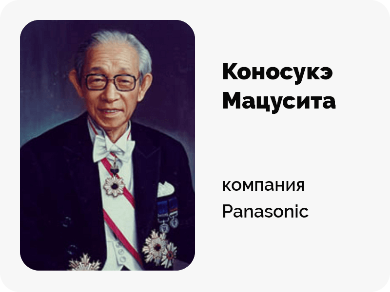

Ме́неджмент — разработка и создание, максимально эффективное использование и контроль социально-экономических систем. Менеджмент нужен для определения и постановки целей, их достижения при помощи людей и ресурсов, координации и контроля. Без грамотной системы управления, знаний или самоорганизации просто невозможна эффективная хозяйственная деятельность в любой сфере: бизнес, государственное управление, некоммерческие проекты и простые задачи.
Понятие «менеджмент» включает в себя:
- Умение управлять. Важно наметить путь развития компании, разработать конкретные задачи, и найти способы их выполнения;
- Контроль над выполнением задач. Он может быть осуществлен в виде назначения на должность и наделением определенного круга обязанностей, мотивация и наказание сотрудников за выполненную работу, направление их действий, запрос отчетов о проделанной работе и прочее;
- Умение организовать и сплотить коллектив;
- Уметь правильно распределять и выявлять важность как человеческих, так и материальных ресурсов;
- Постоянное изучение рынка и его прогнозирование, умение быстро принимать решения, причем их результатом должны стать – минимум затрат, максимум выгоды.
В данной статье постараемся ответить на все вопросы, связанные с менеджментом.
Что такое менеджмент
Менеджер в переводе с английского произошел от глагола to manage, который означает именно «управлять».
Менеджмент имеет десятки определений, каждое из которых неоспоримо верно. В этой статье выделим 7 самых точных определений, который встречаются чаще всего. 7 определений слова «менеджмент»:
- Менеджмент — это одно из направлений современной экономической науки, направленное на создание, планирование и реализацию плана развития предприятия, организации, фирмы с целью максимизации потенциальной профита компании, создания устойчивой системы управления предприятием. Большое значение для развития фирмы играет стратегический менеджмент руководства компании.
- Знаменитый исследователь в области менеджмента П. Друкер дал следующее определение менеджмента: «Менеджмент обозначает функцию, но также и людей, ее выполняющих; он указывает на социальное или должностное положение, но в то же время означает учебную дисциплину и область научного исследования».
- Менеджмент понимается как вид трудовой деятельности. Управление — это умственный труд, в результате которого осуществляется процесс управления. Коротко говоря, процесс управления — это непрерывное осуществление последовательных действий от прогноза предстоящей деятельности, постановки цели и разработки способов ее достижения до анализа ее фактического результата.
- Менеджмент — это процесс, направленный на достижение целей организации посредством упорядочения преобразований исходных субстанций или ресурсов в требуемые результаты.
- Менеджмент как научная дисциплина опирается на практику управления. Соответственно под менеджментом иногда понимают практику реального управления и ее осмысление.
- Менеджмент — это искусство управлять интеллектуальными, финансовыми, сырьевыми, материальными ресурсами в целях наиболее эффективной производственной деятельности.
- Менеджмент — это способ управления, который обеспечивает организацию труда, повышение его производительности, ориентацию предприятия на прибыль и доходность, чуткость к различным новациям, воплощение их в производственной деятельности.
С одной стороны это теоретическая дисциплина, занимающаяся изучением законов и принципов управления, с другой – чисто практическая деятельность, направленная на рациональное распределение людских и/или материальных ресурсов. Все рассмотренные понимания термина «менеджмент» (а их число можно значительно увеличить) отнюдь не противоречат друг другу. Наоборот, они тесно связаны между собой и раскрывают разные стороны обсуждаемого понятия. Простыми словами менеджмент - это искусство управления, лидерства. Это значит и делегирование работы, разделение ее на более и менее важные.
Искусство управлять – одно из самых тонких и востребованных, поскольку в руках менеджера сосредоточено влияние на все основные процесса, происходящие в ходе работы компании.
Краткая история развития менеджмента
Точной (и даже примерной) даты зарождения науки управления не назовет ни один историк. Логично предположить, что менеджмент существует в обществе с момента возникновения социальных отношений. Даже в самых древних сообществах были нужны люди, которые брали на себя функции управления и координирования деятельности групп. Древние менеджеры управляли людьми при строительстве жилищ, добыче пищи, защите от диких зверей и врагов.
Выделяют 4 исторических периода развития менеджмента как науки управления людьми:
{kind=link}
- Древний период (10 000 лет до н.э. – 18 век н.э.). Прежде чем менеджмент выделился в самостоятельную сферу знаний, общество столетиями накапливало по крупицам опыт управления. Зачаточные формы существовали уже на стадии первобытнообщинного строя. Старейшины и вожди представляли собой руководящее начало всех разновидностей деятельности. Примерно в 9-10 тысячелетиях до нашей эры присваивающее хозяйство (собирательство и охота) постепенно уступило место производящему: этот переход можно условно считать периодом зарождения менеджмента. Уже в Древнем Египте (3 тыс. лет до н.э.) был сформирован полноценный государственный аппарат с обслуживающей прослойкой. Позже принципы управления сформулировали в своих работах философы Сократ и Платон.
- Индустриальный период (1776—1890). Максимально точно принципы государственного управления раскрыл в своих работах А. Смит. Он сформулировал законы классической политэкономии и управления, писал об обязанностях руководителя государства. В 1833 г. британский математик Чарльз Бэббидж предложил свой проект «аналитической машины», которая помогла принимать управленческие решения более оперативно.
- Период систематизации знаний (1860—1960). Время интенсивного развития теории управления, появления новых направлений, течений и школ. Можно сказать, что современный менеджмент зародился именно во времена промышленной революции. Возникновение фабрик привело к необходимости создания единой теории управления большими группами людей. Для этих целей лучших работников обучали представлять интересы руководства на местах — они и были первыми менеджерами.
- Информационный период (1960 г. — наше время). Сегодня для принятия управленческих решений требуется обработка огромного количества информации. Управление представляет собой логический процесс, который можно выразить математически. Практикуются различные подходы к управлению, основанные на принципах лояльности к работающим людям и этике бизнеса.
Менеджмент как наука и прикладная деятельность продолжает развиваться и совершенствоваться. Ни один руководитель в наше время не может управлять людьми, финансами, производственными процессами без теоретической базы и практических навыков менеджмента.
Идея менеджмента как самостоятельной профессии была выдвинута в 1886 г. американским бизнесменом Г.Тауном, который выступил на «Собрании инженеров-механиков» с докладом «Инженер как экономист». Доклад произвел впечатление на инженера-механика Ф.У.Тейлора, который и создал теорию научного менеджмента.
Основы менеджмента
Вся суть руководства состоит в трех вопросах:
- «Кто» и «кем» управляет;
- «Как» происходит этот процесс;
- «С помощью чего» осуществляется.
Вкратце процесс управления можно описать так:
- Желаемое сопоставляется с реальным состоянием (задайте простые вопросы: «где мы сейчас?» и «куда мы движемся?»)
- Требования к действиям («что необходимо сделать?»)
- Принятие решений, выбор стратегии («какой путь и способ лучший?»)
- Контроль и оценка («чего мы достигли, и что из этого следует?»)
В основе эффективного руководства лежит ориентация на человеческие взаимоотношения. При взаимодействии с внешней средой (например, продажи часть внешней среды) это означает ориентацию на потребителя. В плане внутренней «кухни» — ориентацию на персонал.
Чтобы раздавать указания, необходимо хорошо разбираться не только в бизнесе, социологии или психологии, но и в производственных процессах своей компании. Нельзя допустить «отрыва» от реальности, когда руководитель отдает приказы, не понимая сути работы фирмы. Поэтому очень важна компетентность руководителя.
Составляющие менеджмента
Этот термин включает несколько составляющих:
- Производство. Сюда входит обеспечение высокой отдачи производства, грамотная наладка рабочего процесса, при которой затраты минимальны, а прибыль – максимальна.
- Координирование работы персонала. Организация «здоровых» отношений в коллективе, налаживание связей между сотрудниками и отделами, построение оперативной сети информирования и раздачи указаний.
- Прогнозирование, планирование и изучение рынка.
Цели и задачи менеджмента
Важнейшей задачей менеджмента является организация производства товаров и услуг с учетом потребностей потребителей на основе имеющихся материальных и людских ресурсов, а также обеспечение рентабельности деятельности организации и ее стабильного положения на рынке. Другими словами, гармоничная и слаженная работа организации, эффективное функционирование ее внешних и внутренних элементов. Независимо от того, малый бизнес или крупная организация, задачи и цели примерно одинаковы.
В связи с этим, в цели и задачи менеджмента входит:
{kind=link}
- обеспечение автоматизации производства и переход к использованию работников, обладающих высокой квалификацией;
- стимулирование работы сотрудников фирмы путем создания для них лучших условий труда и установления более высокой заработной платы;
- постоянный контроль за эффективностью деятельности фирмы, координация работы всех подразделений фирмы;
- постоянный поиск и освоение новых рынков;
- анализ имеющихся и требующихся ресурсов, поиск источников их обеспечения;
- определение конкретных целей развития фирмы;
- выявление приоритетности целей, их очередности и последовательности решения;
- разработка стратегии развития фирмы — хозяйственных задач и путей их решения;
- выработка системы мероприятий для решения намечаемых проблем на различные временные промежутки;
- определение необходимых ресурсов и источников их обеспечения;
- развитие и выживание организации, сохранение своей рыночной ниши и ориентация на расширение сферы влияния;
- достижение поставленных результатов;
- сохранение и приумножение капитала, обеспечение конкретного уровня прибыли;
- создание условий, необходимых для стабильного существования организации;
- преодоление рисков и прогнозирование рискованных для компании ситуаций;
- установление контроля за выполнением поставленных задач.
Выполнение задач менеджмента по регулированию, организации, координации и контролю за производственным процессом и достижение намеченных целей получают оценку на рынке.
Задачи управления непрерывно усложняются по мере роста масштабов производства, требующего обеспечения все возрастающими объемами ресурсов — материальных, финансовых, трудовых и др.
Субъекты и объекты менеджмента
В управлении всегда выделяют субъекты и объекты:
- Объекты менеджмента – это все, в отношении чего осуществляется менеджмент – производство, сбыт, финансы, персонал. Объекты имеют некоторую иерархию: направлять менеджмент можно на свое рабочее место, структурную единицу (группу, бригаду, участок), подразделение (цех, департамент), организацию в целом. Объект менеджмента представляет собой то, на что направлен процесс управления. Объектом может быть цех, производство, рабочий персонал и прочее.
- Субъект менеджмента – это человек или коллектив людей, объединенных управленческими воздействиями, направленный на достижение базовых целей организации. Когда мы говорим о субъекте менеджмента, мы имеем в виду исключительно реальных людей, вовлеченных в процесс работы фирмы. Каждый из них, посредством возложенных обязательств, влияет на реализацию определенных задач. Говоря простым языком, любой человек является субъектом управления. Мы сами управляем своей жизнью, принимаем решения о переезде, поступлении на учебу, работу, службу.
Если говорить в более узком смысле понимания понятия «субъект менеджмента», то речь идет непосредственно о менеджерах, то есть тех людях, что осуществляют управление над социальными объектами. Менеджеры могут быть руководителями разных уровней, выполнять разные функции, в зависимости от сферы применения собственных навыков.
Субъект воздействует на объект, приводя в движение все основные процессы и механизмы, лежащие в основе производства.
Принципы менеджмента
К главным принципам менеджмента относятся:
{kind=link}
- Разделение обязанностей, труда. Каждая организация имеет определенные отделы, которые выполняют свойственные им задачи. Например, юридический отдел занимается решением правовых вопросов, в то время как финансовый отвечает за денежные средства. Каждое из таких звеньев имеет круг обязанностей и свою специализацию, но их работа направлена на достижение одной цели. Правильное разделение труда позволит решить максимум задач;
- Единоначалие и подчинение. Несмотря на то что на организации существует огромное количество отделов, указания по работе должны исходить от одного руководителя. Путаница в указаниях начальников может существенно снизить производительность труда;
- Соблюдение регламента организации, дисциплина. Успех организации зависит от дисциплины и порядка. Каждый служащий обязан знать и строго соблюдать должностную инструкцию. Не опаздывать на работу, находиться на рабочем месте. Материальные ценности организации также должны храниться строго по регламенту. Права конфиденциальности клиентов должны быть защищены от посторонних лиц и т.д. Задача руководителя в этом направлении – осуществление контроля над исполнением обязанностей. Провинившиеся должны быть наказаны, а отличившиеся поощрены;
- Умение правильно распределить и наделить необходимыми полномочиями сотрудников. Ответственность за выполненную работу лежит непосредственно на руководителе, а также на тех, кому были поручены задания, задачи;
- Справедливость. Важно принимать решения с точки зрения справедливости. Особенно этот фактор должен учитываться при определении наказания или поощрения. Если действия руководителя будут справедливыми, то это позволит работникам больше доверять как начальству, так и организации;
- Важно показывать пример персоналу и нести ответственность. Например, интересы коллектива должны стоять превыше личных;
- Вознаграждение. Необходимо всегда помнить тот факт, что преданная и добросовестная работа во благо организации должна быть вознаграждена;
- Поддержание инициативы. Умение выслушать предложение работника, поможет организации найти новые решения;
- Умение поддержать корпоративный дух. Создание дружного коллектива, путем совместного времяпровождения, проведением праздников, позволит облегчить работу предприятия, а также избавит от текучести кадров.
Функции менеджмента
Чтобы быть управленцем в любой организации – хоть в «Газпроме», хоть в маленьком ООО — нужно четко представлять себе последовательность действий, которые придется производить. Эта последовательность – и есть цепочка функций, которые обязан выполнять менеджер. Рассмотрим основные функции по порядку.
{kind=link}
- Постановка целей. Эта функция нацелена на эффективное определение результата, на который ориентируется вся основная деятельность. Правильная постановка задач нужна для того, чтобы сформировать наилучшую стратегию развития компании. Еще этот процесс можно использовать для мотивации служащих, формирования корпоративного духа. Условно можно выделить два базовых типа целей: стратегические (долгосрочные) и тактические (краткосрочные).
- Планирование. Эта функция отвечает за определение и поиск ресурсов, позволяющих достигнуть целей организации. Сюда же входит разработка способов достижения поставленных задач.
- Организация деятельности. Формирование организационной структуры. Сюда относится распределение заданий и полномочий между работниками, организация их совместного труда, разработка критериев оценки работы сотрудников.
- Контроль. Эта функция подразумевает, что руководитель обязан постоянно следить за выполнением поставленных задач, анализировать эффективность труда, делать выводы о том, какие решения были уместными, а какие пользы не принесли. Иначе говоря, он контролирует соблюдение дисциплины, производственные моменты (доставка сырья, наладка оборудования и пр.), качество товаров и услуг, график работ и на этой основе оценивает результаты труда и строит тактику дальнейших действий. Существует внешний и внутренний контроль. Можно выделить три стадии контроля:
- Предварительный — на этапе планирования формируются правила и регламенты.
- Текущий — осуществляется непосредственно в ходе процессов.
- Заключительный — подведение итогов, анализ и выводы.
- Координация. Одна из дополнительных функций, отвечающая за согласованную деятельность всех управленческих звеньев. Так как любая деятельность строится на эффективном разделении труда, необходимо собрать все звенья цепи воедино. Различные подразделения компании нуждаются в тесной взаимосвязи и диалоге руководителей с рядовыми сотрудниками. Помехи и отклонения от заданного графика должны своевременно устраняться. Это и становится задачей менеджера. Осуществлять координацию можно с помощью составления и согласования рабочих планов, совещаний и объявлений.
- Мотивация. Эта функция нацелена на повышение производительности труда. Достичь нужного эффекта можно способом активизации сотрудников и их стимулирования. Необходимо сделать так, чтобы персонал действовал не только в личных интересах, но и в интересах организации. Мотивация формируется по следующей схеме:
- работники осознают поставленные задачи;
- знакомятся с потенциальным вознаграждением;
- соотносят полученные сведения с возможностями и потребностями;
- приступают к действиям.
- Другие функции. Есть и прочие функции, которые выполняет управленческое звено – они побочные, но также имеют большое значение для развития компании. Например, поиск и внедрение инновационных методов управления персоналом, планирование и осуществление маркетинговой стратегии.
Виды менеджмента
Изначально менеджмент делиться на два вида:
- Общий менеджмент. Это управление деятельностью организации в целом или ее самостоятельными хозяйственными звеньями.
- Функциональный менеджмент Управление определенными сферами деятельности организации или ее звеньями.
Как видно в организации могут возникнуть различные задачи, и методы для их выполнения тоже являются разными. Поэтому в зависимости от возникшей ситуации может быть применен тот или иной вид функционального менеджмента. Общий менеджмент на виды не делится. Ниже разберем подробнее каждый вид менеджмента.
{kind=link}
Производственный менеджмент
Менеджмент делится на виды в зависимости от выполняемых задач и методов достижения желаемого.
Производственный призван обеспечить конкурентоспособность и высокий спрос на товары и услуги фирмы. В этом случае «производство» не обязательно означает промышленное предприятие, это могут быть банковские учреждения, различные коммерческие фирмы, банки.
Данный вид включает организацию производства, построение стратегических прогнозов, использование инноваций. Задачи:
- Контроль работы системы, устранение и предотвращение сбоев;
- Процесс оптимизации объема выпускаемой продукции;
- Координация трудовых ресурсов, поддержание дисциплины и порядка, поощрение отличившихся работников, мотивационные мероприятия для персонала;
- Контроль рациональности использования оборудования, поддержание его в исправном состоянии.
Стратегический менеджмент
Стратегическое управление подразумевает разработку и приведение в действие намеченных путей развития организации. В зависимости от выбранной тактики составляется конкретный план работы.
Например, потребность в увеличении дохода можно удовлетворить несколькими способами. Увеличить масштабы выпуска продукции, повысить качество товаров и т. д.
Просчитав все возможные варианты, руководитель выбирает наиболее реальный и эффективный способ. Затем происходит планирование и распределение заданий и задач для персонала.
Финансовый(банковский) менеджмент
Финансовый вид простыми словами - это процесс управления материальными ресурсами предприятия. В обязанности финансового директора входит управление бюджетом организации и его грамотное распределение. Финансовый специалист занимается анализом расходов и доходов предприятия, изучением его платежеспособности, построением рациональной финансовой политики.
Основные обязанности специалиста, контролирующего финансы (финансового менеджера):
- Оптимизация денежного оборота, снижение уровня расходов;
- Сведение финансовых рисков к минимуму;
- Поддержание рентабельности организации;
- Оценка финансовых возможностей и перспектив;
- Осуществление антикризисного руководства.
- Финансовый директор отвечает за то, чтобы организация приносило стабильный доход и не разорилось.
Инвестиционный менеджмент
Этот вид отвечает за инвестиции компании, а именно за привлечение новых инвестиций и выгодное вложение средств самого предприятия. Осуществляется главным образом с помощью долгосрочного планирования (бизнес-план) и фандрайзинга – поиска спонсоров, грантов.
Информационный менеджмент
Сбор, управление и распределение различной информации. Производится при помощи компьютерных сетей, специального программного обеспечения. Необходим для предоставления фирме актуальных сведений, изучения и прогнозирования потребностей клиента.
Основные функции:
- Регулирование делопроизводства и документооборота организации;
- Получение сведений о состоянии рынка, ожиданиях потребителей;
- Публичное представление фирмы;
- Упорядочивание внутренних данных (сведения о сотрудниках, производстве, финансах и т. д.)
Риск-менеджмент
Любая коммерческая деятельность потенциально связана с риском, потому обязанностью риск-менеджера становится прогнозирование и предотвращение возможных проблем.
Если неприятности уже возникли, на него возлагается обязанность минимизировать потери и попробовать извлечь выгоду из ситуации.
Поэтапно основной процесс выглядит так:
- Определение фактора риска, оценка степени опасности, возможного урона для фирмы;
- Подбор инструментов и методов борьбы с проблемой;
- Разработка и осуществление риск-стратегии, призванной уменьшить убытки;
- Оценка первых результатов проведенных мероприятий, при необходимости — доработка стратегии.
- Умение просчитать риски наперед усиливает позиции компании на рынке, снижает вероятность банкротства и способно уберечь ее от невыгодных путей развития.
Экологический менеджмент
Иногда этот вид выделяют в отдельную категорию, в первую очередь он связан с охраной окружающей среды. Цель – создание и поддержание экологического производства путем рационального использования природных ресурсов, переработки отходов, минимизации вредных выбросов в окружающую среду.
Кадровый менеджмент
Описание профессии менеджера подразумевает работу с людьми. Любые задачи и цели организации достигаются при помощи персонала. Этот вид отвечает за набор, обучение, управление человеческими ресурсами, не затрагивая производственные моменты.
Международный менеджмент

Регулирует внешнеэкономические отношения и связи фирмы, отвечает за экспорт и импорт, сотрудничество с другими компаниями в научно-технической сфере. Помогает повысить конкурентоспособность предприятия за счет расширения бизнеса на территории других стран.
Рекламный менеджмент
Отвечает за эффективную рекламную деятельность и продвижение на рынке товаров и услуг компании. Главные задачи — информационное обеспечение рекламных мероприятий, их планирование и постановка целей, которые должны быть достигнуты в результате. Сюда же входит организация рекламной деятельности, ее регулирование, контроль и оценка достижений.
Инновационный менеджмент
Целью инновационного менеджмента выступает строгое определение ведущих направлений производственной и научно-технической деятельности предприятия. В таких областях, как разработка, внедрение, модернизация и усовершенствование продукции, снятие устаревшей продукции с линии производства.
Менеджмент качества (quality management)
Это деятельность, направленная на планирование, целеполагание, обеспечение, контроль, улучшение качества продукции и услуг, производимых конкретным предприятием. Осуществляется строгий производственный контроль.
Три уровня менеджмента
Уровни зависят от конкретных условий труда. Они реализовываются в следующем порядке:
- Нижний уровень управления (линейное звено — начальники участков, мастер смены, начальники отделов, старшие менеджеры). Здесь сосредотачивается непосредственное руководство деятельностью исполнителей. Менеджмент этого уровня обеспечивает выполнение оперативных планов и решений среднего звена.
- Средний уровень управления (среднее звено — начальники управлений, цехов, производств). Менеджмент обеспечивает свободой действий, но они должны обеспечить достижение поставленных им целей. Это менеджеры, определяющие, как лучше реализовать определенную топ-менеджментом стратегию, принимающие решения по конкретным бизнес-процессам и руководящие линейными менеджерами;
- Высший уровень управления (высшее звено — генеральный директор, исполнительный директора, члены совета директоров, главный бухгалтер, главный юрисконсульт). Еще их называют топ-менеджерами. Менеджмент занимается формированием цели, политики и стратегии действий предприятии. Они решают самые важные вопросы, как-то: выпуск новых изделий, освоение рынков, взаимоотношения с конкурентами и государством, развитие организации сейчас и в будущем.
Методы менеджмента
Исходя из наличия функций менеджмента можно выявить его основные методы:
{kind=link}
- Экономические. Методы, относящиеся к данной сфере, позволяют организации «выжить» в современных рыночных условиях, а также разрешить материальные отношения внутри организации.
- Административные. Методы данной группы позволяют осуществлять контроль, планирование, устанавливать ответственность за нарушение регламента предприятия.
- Социально-психологические. Эти методы направлены на построение отношений как внутри коллектива, так и с партнерами. Важно помнить, что взаимоотношения должны строиться на доверии. Достигнуть этого несложно, главное, не забывать про поощрительные меры.
В рамках функционирования организации сочетаются все методы в зависимости от ситуации. Менеджер должен уметь налаживать коммуникацию с сотрудниками какого-либо рода деятельности. Его роль предполагает работу в разных направлениях предприятия. Есть отдельные типы, например, финансовый менеджмент, когда работа ведется в одной нише. Тогда в организации должно быть несколько менеджеров, несколько руководителей высшего звена.
Менеджер и его функции
Термин "менеджер" имеет довольно широкое распространение и употребляется применительно:
- к организатору конкретных видов работ в рамках отдельных подразделений или программно-целевых групп;
- к руководителю предприятия в целом или его подразделений (управлений, отделений, отделов);
- к руководителю по отношению к подчиненным;
- к администратору любого уровня управления, организующего работу в соответствии с современными методами.
Свойственные рынку риск и неопределенность ситуации требуют от менеджеров самостоятельности и ответственности за принимаемые решения, способствуют поиску оптимальных организационных и научно-технических решений относительно нововведений.
Необходимые навыки менеджеру
Менеджер должен обладать определенными навыками и качествами, он:
{kind=link}
- Организатор. На нем лежит обязанность организовать работу предприятия в той или иной сфере (наладить поставки сырья, рекламу и пр.) и поддерживать стабильность;
- Психолог. Это качество необходимо для эффективного регулирования отношений в коллективе. Нужно хорошо знать своих подчиненных для стимуляции труда, решения конфликтов, построения «здоровых» отношений между начальством и работниками. Знания в области психологии, языка телодвижений помогают лучше понимать людей, действовать правильно и эффективно;
- Специалист в своей области. Важно разбираться во всех тонкостях своей специализации, чтобы оптимизировать рабочий процесс;
- Лидер, умеющий сплотить коллектив, обладает влиянием и умением оперативно действовать, принимать быстрые решения в нестандартных ситуациях. Сюда относится:
- знание в совершенстве своих прямых подчиненных, их способностей и возможностей выполнения конкретной поручаемой им работы;
- знание условий, связывающих предприятие и работников; защита интересов тех и других на справедливой основе;
- устранение неспособных с целью удержания единства и правильности функционирования фирмы.
- Способен управлять временем, осуществлять эффективное планирование, трудиться в определенных временных рамках, контролировать соблюдение персоналом заданного графика работ;
- Оратор. Деятельность управляющего нередко связана с публичными выступлениями;
- Стрессоустойчив. Необходимая черта, поскольку лидерская работа связана со стрессами и постоянным решением проблем или их прогнозированием;
- Мотивирован, инициативен. Достичь успеха может только активный человек, заинтересованный в результатах своего труда;
- Хороший учитель. Важно умение объяснять и показывать некоторые особенности работы на своем примере;
- Аналитик, способен предугадывать рынок и анализировать действия конкурентов и своей компании.
7 полезных для каждого успешного менеджера советов.
{kind=link}
- Наладьте со своими подчиненными и руководством взаимопонимание. Коммуникабельность для менеджера является крайне важным качеством для организации. Нужно наладить коммуникацию со всеми людьми вокруг вне зависимости от их должности и социального статуса, чтобы суметь грамотно управлять. Нет ничего важнее, как заработать уважение.
- Научитесь мотивировать окружающих. Помните, что единой формы мотивации просто не существует, так как для разных людей есть различные вещи и формы мотивации, которые на них подействуют. Системный фиксированный план тут не поможет.
- Давайте и получайте обратную связь. Регулярно и, по возможности, обо всем общайтесь с вашими подчиненными, задавайте вопросы, поднимайте интересные темы. Обратная связь поможет определить сотрудников, которые работают выше нормы, лучше и значит их нужно взять на заметку. При общении у команды возникает чувство единства, что очень важно.
- Постоянно занимайтесь саморазвитием. Без этого просто не получится быть хорошим руководителем, который знает все то, что и его подчиненные, а еще немного больше.
- Планирование — способ решения большого количества проблем. Причем, большинство из них может быть решено еще до их возникновения. На стадии планирования обязательно спрашивайте совета у подчиненных, нужно задавать корректные вопросы — это не только даст им возможность принять участие в вашей работе, но и позволит почувствовать себя причастными к важным решениям.
- Осведомленность — крайне важное дело, которое позволит вам знать о том, что происходит в коллективе, которым вы управляете.
- Используйте творческий подход к решению вопросов. Поверьте, далеко не всегда все можно узнать из должностной инструкции, аналогично — использование принятых правил не всегда позволит решить конфликтную или спорную ситуацию, когда возникает такая необходимость.
Где обучиться на менеджера
Менеджменту можно обучиться во многих вузах России (например, МГУ, РЭУ им. Г.В. Плеханова, ГУУ, РГГУ). Получить соответствующие навыки можно и с помощью учебных пособий, видеолекций, курсов и семинаров, находящихся в открытом доступе или на специализированных площадках. Топовые менеджеры часто создают программы, знания которыми они могут поделиться иногда полезнее сухой теории, хотя ею тоже не стоит пренебрегать. Также есть коучи, бизнес-тренеры, обучающие менеджменту и улучшающие качество отдельных навыков управления персоналом.
Во многих случаях требуется не полноценное обучение, а переподготовка (например, если у вас уже есть экономическое образование, но другого профиля или когда требуются знания по управлению в конкретной сфере). Пройти переобучение по менеджменту можно на тысячах курсов по всей стране. Если же вам нужно не столько получить «корочки», сколько узнать об актуальных новинках в науке управлять и о новых тенденциях в менеджменте, хорошо подойдут онлайн-курсы.
Выдающиеся менеджеры в истории человечества
В истории менеджмента есть фигуры, которые занимают лидирующую позицию уже долгие годы и вдохновляют руководителей всего мира. Это управляющие, разработавшие собственные методы управления и достигшие колоссальных успехов с их помощью. Расскажем о некоторых из них.
Джек Уэлч — компания General Electric.
Этот человек стал легендой американского предпринимательства. Проведя ровно 20 лет на посту гендиректора организации General Electric, он превратил неповоротливую корпорацию в глобального игрока мировой экономики и был признан лучшим менеджером XX века. Принцип Уэлча гласит: если компания не занимает ведущее место в своей отрасли, ее следует продать. Руководствуясь этим принципом, руководитель GE последовательно избавился от неприбыльных и бесперспективных фирм, принадлежащих корпорации и радикально сократил количество сотрудников. Уэлч пытался добиться большего от меньшего числа людей, и ему это удалось. Сотрудников стало меньше, но они стали работать лучше. Чтобы мотивировать работников, Уэлч вкладывал миллионы долларов в корпоративные фитнес-залы, места отдыха и гостевые комплексы.
Генри Форд – компания Ford.
Создатель и руководитель одной из крупнейших в мире корпорации был первым, кто поставил производство автомобилей на конвейерную основу. Ему принадлежит почетное звание отца современной автомобильной промышленности. Став руководителем собственноручно созданной компании в 1903 году, Форд раньше других понял, какое значение имеет для увеличения прибыли грамотный маркетинг своей продукции. Форд одним из первых промышленников понял, что для увеличения производительности следует мотивировать своих рабочих долларом: зарплаты сотрудников на его предприятии были самыми высокими для своего времени. Кроме того, он ввел 8-часовую смену и оплачиваемые отпуска на своем заводе.
Коносукэ Мацусита – компания Panasonic.

Отец всемирно известного бренда электроники и бытовой техники пришел в большой бизнес с капиталом в 100 йен. Начав с производства плат для изоляции вентиляторов и велосипедных ламп, Мацусита постепенно превратил свою компанию в мирового лидера электронной промышленности. Миссию компании он видел в улучшении уровня жизни людей и служении обществу. Своим успехом корпорация Panasonic во много обязана творческому подходу руководителя фирмы к маркетингу и продвижению продукции. Кроме того, Коносуке первым среди руководителей японских компаний подобного уровня уяснил, что цена предприятия равняется стоимости его человеческого фактора. Без мотивированного и должным образом направленного персонала любая фирма разваливается на составные части и не работает как целое.
Билл Гейтс — компания Microsoft.
Основатель крупнейшей компании в сфере компьютерного софта, больше известен как «человек, сделавший себя сам». Однако, он внес еще и значительный вклад в развитие представлений о менеджменте, написав книгу «Бизнес со скоростью мысли». В ней он описал, как влияют на успех в бизнесе информационные технологии, как с их помощью реализуется стратегия, которая получила название «бережливое производство». Гейтс и сегодня является для многих менеджеров мерилом успеха в мире управленческих стратегий.
Джефф Безос — компания Amazon.
Он начинал свой бизнес с нетривиального управленческого решения: запустил сайт онлайн-торговли в незаконченном виде. Первые покупатели при желании могли заказать на нем… отрицательное количество товаров. Спешку сам Безос объяснял необходимостью опередить конкурентов. Этому правилу он следует все прошедшие с тех пор 23 года. Владелец Amazon, в отличие от многих своих коллег по бизнесу, чрезвычайно вовлечен в процесс функционирования своего детища – он лично придумывает новые направления деятельности, новые услуги, участвует в их тестировании и оценке результатов. В 2018 году Джефф Безос считается самым богатым человеком в мире – его состояние оценивается примерно в 140 миллиардов долларов.
Менеджмент предприятия
Менеджмент предприятия представляет собой совокупность составляющих частей. Например, крупная организация для решения поставленных задач создает несколько малых частей в одной общей системе менеджмента. Крупная организация одновременно ставит и решает комплекс взаимосвязанных задач, для чего создается несколько подсистем в системе менеджмента:
- управление проектами;
- управление производством;
- составные части менеджмента
- управление проектированием;
- управление персоналом;
- управление качеством;
- анализ конъюнктуры рынка;
Работа менеджеров сводится к решению как ежедневных задач, так и более долгосрочных:
- применение методов работы, которые обеспечивают достижение результатов компанией в самые ближайшие сроки;
- постоянное администрирование – различные организационные моменты на предприятии должны сопровождаться контролем со стороны руководства;
- определение целей и направления, которых компания должна придерживаться. Например, предпринимательство.
- В ходе деятельности создается система ценностей (интеграция), которая позволит коллективу работать в общем направлении, и обеспечить им безопасные условия труда. Наличие такой системы позволит организации существовать на рынке долгое время.
- поддержание конкурентоспособности компании;
- формирование деловой репутации организации;
- работа с персоналом с целью повышения мотивации;
- анализ потребностей компании;
- сохранение финансовых позиций.
Менеджеры на предприятии, как универсальные специалисты, решают множество задач в своем отделе. От их организации работы зависит согласованность и организованность предприятия.
Проблемы менеджмента на предприятии
Менеджеры сталкиваются с проблемами на разных уровнях организации предприятия:
- нестабильный спрос на рынке;
- агрессивная конкуренция;
- устаревшие инструменты управления рабочим процессом;
- рисковая активность при производстве;
- разобщенность коллектива;
- недостаточная мотивация сотрудников.
Успешный менеджер всегда должен быть в курсе последних тенденций, постоянно учиться и совершенствовать свои навыки. Причем обучение лучше проходить вместе с сотрудниками, это позволит им разглядеть в управленце своего лидера, и создаст особую атмосферу на производстве, при которой каждый сотрудник сможет раскрыть свои способности. Важно заботиться о боевом духе своей команды, управленческая деятельность таким образом будет затрачивать меньшие усилия, чем в обратном случае.
Менеджмент в малом бизнесе
Под малым бизнесом понимаются разные формы организации коммерческой деятельности. Это может быть единственный владелец бизнеса или организация с небольшим штатом из десятка сотрудников. Для эффективной работы организации, менеджеры ставят перед коллективом конкретные задачи краткосрочного характера. Такое поведение позволяет им устанавливать четкие ориентиры на пути достижения поставленных целей, а деятельность рабочих приобретает характер целеустремленности и становится наиболее продуктивной.
К задачам менеджмента малого предприятия относятся:
{kind=link}
- Изучение и анализирование фактов, влияющих на работу предприятия, изучение потребителя, диагностика внутренних проблем коллектива.
- Определять цели, устанавливать им степень важности и вести постоянный контроль над ними, разрабатывать стратегию конкурентоспособности фирмы.
- Организация работы фирмы, в том числе обеспечение всем необходимым. Например, машины, материалы, финансы и прочее. Соблюдение постоянного контроля над работой оборудования.
- По мере необходимости наделять ответственных работников определенными полномочиями, необходимыми для достижения целей.
- Общение с персоналом выстраивают напрямую, без передачи поручений нижестоящим руководителям.
- Работа с коллективом. Важно уметь выбрать ответственных работников, которые смогут ответить за последствия своих решений. Нужно развивать их способности, обучать, и избавляться от бесперспективных работников, работать индивидуально с каждым.
- Обеспечивать координацию всех специалистов на предприятии.
- Проявлять гибкость и многозадачность в организации рабочего и производственного процесса;
Развитие представлений о менеджменте
В сообществах людей всегда присутствовало управление и организация: главы семейств, вожди родов и племен, советы старейшин играли, а при появлении государств проблемы управления вышли на первый план.
Наиболее значимые школы менеджмента:
Научная или классическая школа менеджмента. Представители данной школы к менеджменту относились, прежде всего, как к управлению производством. Они стали тщательно анализировать технологические процессы, в том числе движения работников во время труда. Цель такого анализа – повышение производительности. Достичь повышения производительности труда можно путем выработки многочисленных правил, инструкций, которые должны соблюдаться рабочими.
Начальной точкой является создание в Московском императорском техническом училище (ныне – Московский государственный технический университет им. Н.Э. Баумана) «русского метода обучения ремеслам». Он был основан на тщательном анализе процессов выполнения тех или иных операций и конструировании наиболее рациональных рабочих процедур. «Русский метод обучения ремеслам» получил международное признание, завоевав высшие награды на выставках в Вене (1873), Филадельфии (1876), Париже (1878). Недостатком этой школы является то, что личность человека (рабочего) не учитывалась.
Административная школа менеджмента примыкает к научной школе. Она ориентирована на управление организациями, регионами, странами. Принципиально важный вклад в менеджмент внес французский ученый и практик Анри Файоль (1841-1925). В 1888 г. он возглавил одну из компаний Франции (горно-металлургический синдикат), находившейся на грани банкротства, и превратил ее в эффективно действующее прибыльное предприятие. Среди государственных деятелей первой половины ХХ в. было немало выдающихся правителей. Например, президент США Франклин Делано Рузвельт (1882-1945) четыре раза избирался на этот пост. Он вывел свою страну из наиболее сильного за всю историю экономического кризиса 20-х – 30-х годов ХХ в. – из «великой депрессии». Это – триумф государственного управления рыночной экономикой.
В менеджменте 30-50-х годов ХХ в. видную роль играла школа человеческих отношений. Наиболее видным представителем этого направления являлся Элтон Мейо (1880-1949), австралиец по происхождению. Наибольшую известность ему принесло пятилетнее исследование Хоторнских предприятий Western Electric Company в Чикаго. Оно привело к более полному осознанию и пониманию «человеческого фактора» в производстве, организации, в частности, роли «неформальной группы» как отдушины для стремлений работников. Была установлена важность каналов передачи информации от работников к управляющим. «Менеджер добивается успехов или терпит поражение в той пропорции, в которой он безоговорочно принимается группой как власть и лидер».
В конце 50-х годов ХХ в. школа человеческих отношений перешла в школу «поведенческих» наук, или бихевиористскую школу (от англ. behaviour – поведение). Наиболее яркими ее представителями были американские социальные психологи Ренсис Лайкерт (1903-1981), Дуглас МакГрегор (1906-1964) и Абрахам Маслоу (1908-1970), автор пирамиды. Они считали, что эффективность управления в фирме следует повышать воздействием на каждого человека в отдельности с помощью различных видов стимулирования. Наиболее известна «пирамида потребностей Маслоу». Из научных результатов бихевиористской школы вытекает, что люди трудятся не только из-за денег, а еще и за признание и поощрение. Величина оплаты труда может побудить уйти с работы, но не может стимулировать повышение производительности, особенно если вознаграждение фиксировано (повременная оплата).
Эмпирическая школа, кибернетика или количественный подход к управлению. Главным направлением исследований в эмпирической школе является изучение содержания труда и функций руководителей. Эмпирики акцентируют внимание на превращении труда по управлению в самостоятельный, специфический вид — в особую профессию. Представители этой школы утверждают, что труд управляющего характеризуется двумя особенностями, которых нет ни у одной другой профессии: менеджер должен создать из имеющихся разнородных ресурсов подлинно целое единство и каждое решение и действие он должен ориентировать на долгосрочные перспективы развития организации. Учитывая, что деятельность менеджера носит комплексный характер, представители эмпирической школы считают, что он должен владеть научно обоснованными и проверенными на практике методами и приемами управления. Эмпирики считают, что любые рекомендации бесполезны, если не собрано достаточное количество конкретных данных, касающихся конкретной ситуации. Рекомендуя практические приемы управляющим, эмпирики особое внимание уделяют умению налаживать взаимосвязи, устанавливать линии коммуникаций.
Американская, европейская и японская модели управления. Все рассмотренные концепции в большей или меньшей степени реализуются в конкретных моделях управления. Основными из них после 1970-х гг. являются американская и японская модели. В 1981 г. У. Оучи предложил теорию Z, которая как бы дополняла идею МакГрегора относительно моделей Х и У. В теории Z Оучи попытался объединить американский и японский подходы к управлению и предложить лучшую модель управления любой организацией. Исходным пунктом концепции является положение о том, что человек – основа любой организации и от него в первую очередь зависит ее эффективность.
Школа социальных систем. Рассматривает человека в социальной группе как один из множества взаимозависимых и взаимодействующих факторов в сложном комплексе социальных отношений организации. Считается, что потребности человека и потребности организации не совпадают. Вводится понятие иерархии потребностей человека. Достигнув одного уровня потребностей, работник стремится к удовлетворению следующего уровня, выражая свою индивидуальность в условиях полной свободы. Но так как по своей природе организация ставит преграды на пути удовлетворения потребностей индивида, они вступают в конфликтную ситуацию. И главной задачей менеджера является сглаживание конфликтов.
«Новая философия управления» или политика постфордизма, которая характеризует современный этап развития науки управления. «Новая философия управления» имеет три составляющие:
- Концепцию группового сотрудничества.
- Концепцию гуманизации труда.
- Демократизацию управления.
Менеджмент на современном этапе. Теория и практика управления продолжают развиваться. Укажем две «точки роста».
Интенсивно ведутся работы по теории активных систем, согласно которой участники системы не просто реагируют на управляющие воздействия, но сами проявляют активность.
Модель активной системы определяется заданием, в частности, множеств допустимых действий участников этой системы — управляющих органов и управляемых субъектов, их целевых функций и той информации, которой они обладают на момент принятия решений. При классификации задач управления в организационных системах естественно исходит из того, какая компонента управляемой системы целенаправленно меняется.
Выделяют институциональное управление (изменение множеств допустимых действий), мотивационное управление (изменение целевых функций) и информационное управление (изменение объемов информации, которую участники системы используют при принятии решений).
В России сейчас развивается контроллинг. Методы контроллинга – это методы информационно-аналитической поддержки принятия решений на предприятии (в организации). В последние годы создано Общество контроллеров и журнал «Контроллинг». Контроллинг (от англ. Control – руководство, регулирование, управление, контроль) – это регулярный контроль (измерение) фактических значений показателей; анализ и выявление причин отклонений фактических значений показателей от плановых; принятие на этой основе управленческих решений по минимизации отклонений.
Особенности российского менеджмента
В России в начале 90-х годов развитие науки управления пошло своим путем, который отклонялся от классического. Знания управленцев, полученные в советских вузах, оказались практически неприменимы в рыночной экономике. На крупных предприятиях это сразу отразилось прежде всего на сбытовых и закупочных подразделениях, а затем и на общем руководстве, от которого теперь требовалось не столько планирование производства, сколько планирование продаж. В результате множество таких предприятий не смогли найти свою конкурентную нишу и закрылись. Оставшиеся учились менеджменту за рубежом. Постепенно стандарты менеджмента, по крайней мере в крупных компаниях, приблизились к западным.
Менеджмент в малом и среднем бизнесе начинал в РФ почти с нуля. Отрицательную роль сыграла хаотичность рынка в 90-е и монополизация основных доходных сфер в экономике в 2000-е. В области управленческих технологий и стандартов наиболее успешные фирмы брали пример с крупных компаний, а другие, которых было большинство, старались восполнить скромные финансовые условия для сотрудников имиджевыми «фишками».
Так возникла целая россыпь профессий, которая существует по сегодняшний день. В названии всех было слово «менеджер»: менеджер по продажам, по закупкам, по работе с клиентами, по логистике, по туризму и так далее. Обычно это продавцы с расширенным функционалом — в их обязанности внедрены активные продажи, поиск клиентов, выездные и телефонные переговоры и т.д. Но слово «продавец» звучит прозаично и буднично, а «менеджер» — куда более статусно, поэтому это служит дополнительной мотивацией сотрудников.
Распространенные ошибки менеджеров и как их избежать
{kind=link}
- Нежелание сразу разбираться с проблемами, накапливание неприятностей. Это приводит к тому, что в итоге образуется «завал», с которым приходится разбираться не только менеджеру, но и его руководству.
- Нежелание слушать подчиненных. Игнорирование мнения сотрудников выливается в то, что они потеряют инициативность и начинают исполнять свои обязанности формально. Плюс падает авторитет менеджера, и ему уже гораздо труднее убедить подчиненных в правильности того или иного своего решения.
- Слишком быстрое принятие решения – вы еще не выслушали все стороны конфликта, а уже назначили виновного. Хорошо, если угадали, а вдруг нет? То же самое касается решений об изменениях. Если вы не поинтересовались мнением подчиненных, будьте готовы к непониманию или даже противодействию.
- Панибратские отношения с подчиненными – попытка подружиться с нижестоящими сотрудниками для завоевания авторитета обычно приводит к тому, что менеджера перестают воспринимать как начальника, чьи указания обязательны к выполнению. Могут и послать, если будете настаивать – как какого-нибудь знакомого из своей компании.
- Неодинаковое отношение к подчиненным – очень плохая стратегия, поскольку «любимчики» быстро наглеют, а «отверженные» теряют мотивацию. Сваливание ответственности на подчиненных, чтобы избежать наказания от своего руководства – кратчайший путь к тому, чтобы полностью потерять уважение сотрудников – как ниже-, так и вышестоящих. Предательства не прощает никто.
Чтобы избежать основных ошибок в менеджменте, следует всегда соблюдать субординацию с подчиненными, прислушиваться к ним и относится с уважением. Заинтересованность каждым сотрудником и уважение в коллективе — залог успешного бизнеса.
Часто задаваемые вопросы
С первого взгляда может показаться, что давать указания и следить за рабочим процессом проще простого, но это заблуждение. Учиться менеджменту нужно даже управляющему двумя-тремя подчиненными. Хороший руководитель становится «универсальным солдатом», который разбирается в любом вопросе, связанным с отраслью его деятельности. Опытный управленец всегда просчитывает ситуацию наперед, он предвидит возможные ошибки и постарается оптимизировать расход сил, средств и времени.
Представьте себе, что организация меняет свое месторасположение. Чтобы переезд прошел максимально безболезненно, необходимо выделить основные этапы переезда, отсортировать документы, вещи и инвентарь. Менеджер без должного опыта не придаст значения процессу переезда с одного помещения в другое, чем лишь усложнит работу коллектива.
Менеджмент преследует основную цель – наладить рабочий процесс, добиться максимальной работоспособности коллектива.
Тайм-менеджмент – это управление временем. Любым – рабочим, учебным, свободным. Этот вид менеджмента позволяет все успевать, никуда не опаздывать и не пребывать в состоянии постоянной усталости и стресса. Главный метод тайм-менеджмента – правильная расстановка приоритетов. Главное правило – грамотно поставить основную цель и следовать ей. Главный инструмент – планирование. На каждое действие рекомендуется закладывать определенное время, важнейшие дела никогда не откладывать на потом, если задача сложная и многоступенчатая, разделять ее на этапы и последовательно выполнять каждый. Существуют специалисты – тайм-менеджеры, которые выявляют ошибки в организации деятельности компании и помогают их исправлять.
Руководители отделов и групп относятся к менеджменту среднего и низшего звена, а руководство бизнесом и отдельными направлениями в нем может быть условно отнесено к топ- или высшему менеджменту.
Профессиональные менеджеры топ уровня принимают решения, которые выполняют подчиненные им руководители. В случае, если, к примеру, руководителями компании принимается решение о повышении уровня продаж продукции, то конкретные меры зависят напрямую от руководителей среднего и низшего звеньев, которые и будут выполнять поставленные планы.
Успешный менеджер имеет не только базовые теоретические знания о структуре менеджмента, это тонкий психолог, искусный оратор, трудолюбивый и открытый к диалогу управленец организации. Занимать такую должность должен человек с острым умом, желанием постоянно развиваться и добиваться поставленных целей. Кроме того, важно быть объективным и беспристрастным. Вот список тех качеств, которыми обязан обладать успешный менеджер:
- Умение вдохновлять, направлять и мотивировать. Грамотный руководитель сумеет понять, каким образом вдохновить работника, повысить уровень производительности труда и иметь влияние, уважение в коллективе. Он учитывает все психологические аспекты.
- Возможность вести диалог с подчиненными. Важно уметь услышать, взаимодействовать, перенимать опыт и уделять внимание конструктивной критике.
- Совершенствование собственных навыков. Лучшие менеджеры никогда не останавливаются на достигнутом, они постоянно развиваются, черпают новую информацию, совершенствуют навыки управления персоналом. Важно оттачивать мастерство влияния на окружающих, чаще посещать специальные тренинги и конференции;
- Планирование рабочего времени. Согласовывайте планы с коллективом, не теряйте контакт, вместе начинайте работу над новыми проектами;
- Знание положения дел в коллективе. Обобщенность руководителя создают колоссальную преграду между ним и сотрудниками, поэтому крайне важно быть вовлеченным и заинтересованным жизнью коллектива;
- Проявление креатива. Известные ТОП-менеджеры с мировым именем ломали стереотипы, позволяя творчеству взять верх над рутинным подходом;
- Прогнозирование. Успешный менеджер должен видеть будущее компании в перспективе, отдавать отчет в том, какую работу предстоит проделать, чтобы достичь намеченных целей и привести компанию к успеху;
- Вера в собственные силы. Все великие менеджеры были непоколебимы в собственных силах и возможностях. Сильный духом, уверенный в себе управленец – движущая сила любой компании.
Когда все критерии собираются воедино, можно говорить о том, что перед нами пример удачного современного менеджера, на которого можно положиться в кризисный период. Наличие слаженного управленческого аппарата – залог его успешного функционирования, поэтому необходимо со всей ответственностью подходить к процессу подбора менеджеров.
Нельзя сказать, что какая-то система менеджмента лучше, а какая-то хуже. В крупной компании должны быть реализованы все. Другой вопрос: какая система приоритетнее для конкретной компании или организации, это зависит от рода деятельности. Например, небольшой фирме, которая только начала деятельность, тратить время, финансовые ресурсы на систему менеджмента социальной ответственности нецелесообразно. Сначала необходимо уделить внимание качеству, информационной безопасности.
Выбранная система менеджмента имеет ценность только если она проста в использовании, полезна рядовым сотрудникам. Папка с регламентными документами, разработанная сугубо для закрытия целей КПЭ, будет использоваться как теоретическое пособие. Очень важно задокументировать методы управленческой деятельности, проводить постоянную переоценку, выявлять недостатки, внедрять новые правила.
Можно полностью регламентировать работу управленца, но нельзя сбрасывать со счетов черты характера. Также как не существует 100% холериков, флегматиков, нет стопроцентных «авторитарных» или «демократичных» руководителей. Менеджер должен сочетать разные методы управления, исходя из ситуации. В реальном мире управленцам приходится постоянно разделять свое внимание между финансовыми, социальными, производственными проблемами. Но теоретики выделяют несколько разных методов управления организацией.
- По целям. Включает постановку целей и задач для различных подразделений организации. Задача менеджера: обеспечить достижение этих целей без превышения выделенного количества ресурсов. Реализация метода управления напрямую зависит от стиля:
- Автократичный управленец ставит цели другим, занимается контролем выполнения работы. Проблема авторитарного стиля: сотрудники часто демотивированы, не чувствуют желания развиваться, предлагать что-то новое.
- Консультативный стиль управления — это когда управленец консультируется с командой, узнает мнение персонала, а затем принимает решения.
- Демократические менеджеры предлагают подчиненным принимать решения самостоятельно.
Метод управления по целям подразумевает использование КПЭ, индикаторов, позволяющих оценить успешность деятельности организации, отдельного человека.
- По ключевым результатам. Управленец может неправильно поставить цели, а при демократическом или консультативном стиле управления персонал может неправильно настроить свою работу. Чтобы избежать такой ситуации, «мягким» менеджерам рекомендуется выбрать управление по результатам.
Вместо КПЭ используется OKR (на русском аббревиатура расшифровывается как цели и ключевые результаты). Менеджеру предлагается поставить амбициозную «недостижимую» цель, разбить ее на несколько реальных действий, SMART-целей.
Выбор между KPI и OKR зависит от зрелости компании. KPI подходит для налаженных процессов, понятных проектов, которые реализовывались ранее. OKR выбирают менеджеры стартапов, инновационных направлений деятельности.
Заключение
В России по самым скромным прикидкам сейчас работает несколько миллионов менеджеров различных направлений деятельности. Это одна из самых многочисленных профессий в стране. Искусство управлять – в числе наиболее популярных и изучаемых в России деятельностей. Результаты этого изучения, правда, заметны не всегда, но есть и обратные примеры. Ежегодно деловое издание «Коммерсант» составляет рейтинг 1000 лучших менеджеров страны.
Менеджмент – та наука, которая требует и знания теории, и проверки этой теории на практике. Чтобы освоить ее, недостаточно пройти курсы или получить диплом. Планирование, прогнозирование, контроль – просто слова, если вы не применяете их в деле. В то же время с каждым из этих направлений сталкивается руководитель в любой структуре – государственной, частной, крупной, в микробизнесе. Можно, а в некоторых организация и нужно, выбрать определенный вид или направление менеджмента.
Кто-то делает успехи с первых шагов, пытается планировать весь процесс. Другие поначалу совершают типичные для менеджеров ошибки в основе. Одни ориентируются на ведущих менеджеров мира, запоминая каждый комментарий, другие ищут свой путь.
Менеджмент – очень подвижное направление человеческой деятельности и находится в процессе непрерывных изменений, поэтому для любого человека, управляющего людьми, в любом случае важно постоянно совершенствоваться и развиваться.
Оставить комментарий
Войти с помощью